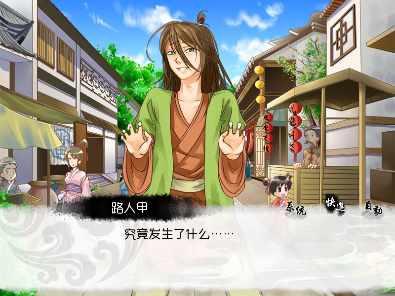
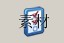

请选择可以合法使用的素材
对写手来说，使用其他作品的人物来当做自己的小说人设，必定会被读者和同行谴责。
对画同人图的画手来说，临摹官方海报，也绝对不敢号称是自己的原创作品。
那么为什么游戏需要例外？为什么同人游戏圈应该觉得盗用和抄袭都不算什么？
近几年因为国内部分站点毫无下限地以盗版素材换取用户流量和广告点击的行为，让中国的创作界陷入了大量使用盗版素材的怪圈。
也让许多制作二次创作（俗称某作品同人）的开发者以为“解包或者截了原作的图片，使用原作OST”就算是可以制作游戏了。
这种行为打击了共享素材作者的热情，导致很长一段时间内，国内自制游戏几乎没有本土的原创素材可用。
为此THE NVL Maker特地在使用规约中添加了禁止使用未获得原作者授权的图片、音乐等的限制，并在官网提供合法素材站点推荐列表，希望圈内风气逐渐往良性发展。
这个做法引起了一些人的不满，甚至还有声称这种做法是“抱着理想溺死”。
然而事实是工具发布一年以来，已经有多款使用THE NVL Maker制作的游戏发布。
其中有完全原创的，也有使用共享素材的，有新人作品，也有经验丰富的开发者的作品。
这些作品无论收费与否，都遵守了NVL关于素材使用的限制，同时质量相比国外游戏来说也毫不逊色。
这证明国内创作者确实拥有这样的实力，可以在不偷不抢的情况下制作出优秀的游戏。
因此现在应该可以对于那些出言表示“大家都在用侵权素材，不用怎么能做游戏”和“制止抄袭会导致圈子变小，游戏数量减少”的人说上一句“理想有多远，你就滚多远”了吧。
对于自认为不能遵守使用规约的人，请放弃使用THE NVL Maker。
侵权者可以继续用“小气不厚道自寻死路”来攻击开发团队，但是使用规约永远不会让步。
因为我们相信，未来会有越来越多的制作者学会尊重他人创作，而盗用素材者只会被时代抛弃。
素材的格式与大小
请先查看基本概念篇的“脚本、图片、音乐、视频文件格式和用途”一文。
本篇将使用的范例素材为：.jpg格式的背景，.png格式的角色、按钮与对话框，以及.ogg格式的音乐。
其中，背景图片的大小为之前创建的工程的分辨率大小，即1024x768。
对于角色的大小，其实没有专门规定的数值，推荐使用绘图工具将背景和人物重叠，模拟游戏画面，对好大小后再输出。
接下来将以之前创建的Hello_World工程作为基础来修改。
最终目的是要将原来的演示：
变成这样的游戏：
想知道到底发生了什么，那就继续往下看吧咩哈哈哈……
取得范例素材
在存放教程的文件夹tutorial下面有一个叫做sample_material的目录，
接下来就是要把这个目录里的范例素材导入到Hello_World里，并修改Hello_World的界面。
范例素材的大小为800x600，和之前设定的Hello_World游戏分辨率一样。
一共有如下这些，感谢各位作者的授权：
- qr_bgd_01.jpg/qr_bgd_02.jpg——中国风背景素材、作者QR
- ahua.png/ersha.png——人物图像、“二逼组”授权
- aeonnight_bgm_01.ogg/aeonnight_bgm_02.ogg——背景音乐素材、作者万古
- ch开头的png文件——水墨风界面、作者红渊
素材的命名、扩展名
命名方面，推荐采用英文与数字、下划线的组合（但请避开xxx_p、xxx_a等吉里吉里特殊命名后缀，即尽量少用下划线加单个字母作为文件名结尾）。
请尽量不要使用空格、点等特殊符号，可能会导致编辑器识别出现问题。
不推荐使用中文的原因是，假如需要制作多语言版本（例如简体、繁体版），那么在简体脚本自动转换时，脚本内引用的文件名也会转为繁体。
但此时素材文件名本身仍然是简体，那么就会出现调用错误，还需要再将素材也转为繁体文件名，造成很多不必要的麻烦，也容易出现错误。
吉里吉里允许不同文件夹内同名素材存在，但只会按照优先顺序调用特定文件，因此不推荐使用重名文件。
例如01.jpg为背景、01.png为人物、01.ogg为音乐就是一个比较糟糕的命名方法，因为这样使用的话，可能调用了错误的文件，为了避免错误，又必须在脚本里指定扩展名。
除了.ks、.tjs文件以外，调用素材时，在脚本里输入扩展名也是一种很不经济的行为，一旦素材格式转换，那么所有的脚本都要跟着改。
如果临到发布游戏时，想压缩空间，把.bmp都转成.jpg，习惯输入扩展名的就悲剧了。
素材的导入
其实所谓导入素材，就是把素材文件复制粘贴进对应的文件夹而已~这里简单说一下注意事项。
在打开游戏工程的情况下，点击工具栏上的“素材”按钮，即可打开游戏工程的素材目录。

推荐按照类型和用途，将素材分别放入对应文件夹内。（虽然就算把背景放到音乐文件夹下游戏也能读，但是编辑器就不认识了……）
请先查看基本概念篇的“THE NVL Maker游戏的文件结构”一文。
推荐文件夹如下：
 ——qr_bgd_01.jpg/qr_bgd_02.jpg
——qr_bgd_01.jpg/qr_bgd_02.jpg ——ahua.png/ersha.png
——ahua.png/ersha.png ——aeonnight_bgm_01.ogg/aeonnight_bgm_02.ogg
——aeonnight_bgm_01.ogg/aeonnight_bgm_02.ogg ——其他对话框、按钮等
——其他对话框、按钮等
需要注意的是，添加素材之后，需要点击工具栏上的刷新按钮，或者关掉编辑器，再重新打开，才能读到新增加的素材缩略图。
假如直接在文件夹内修改了素材，在编辑器上可能也无法即时反映出来。这时候也推荐重启编辑器~